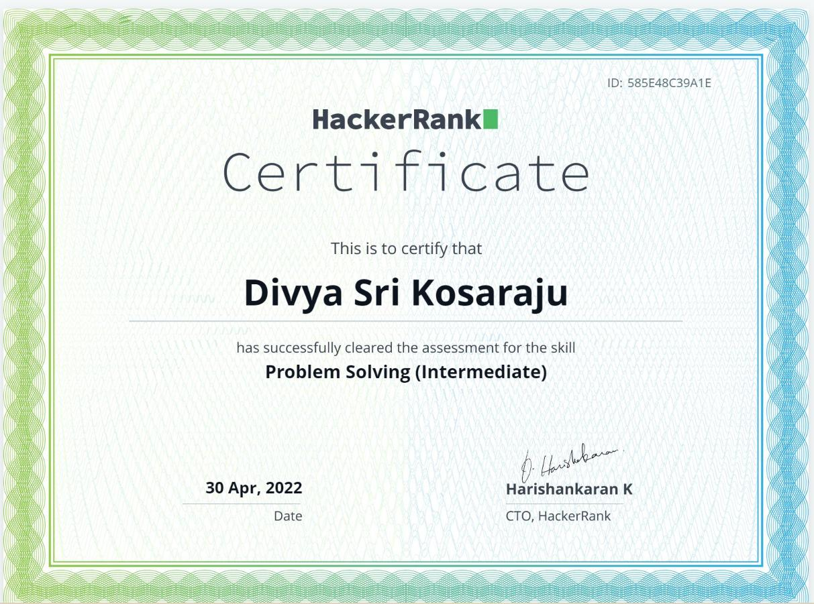
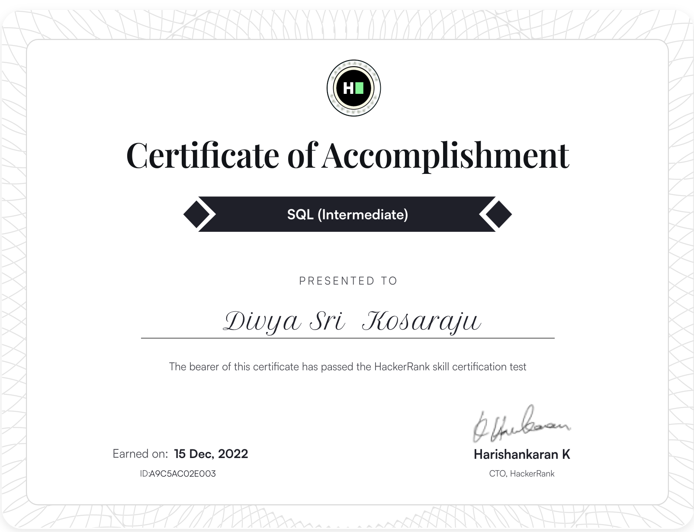
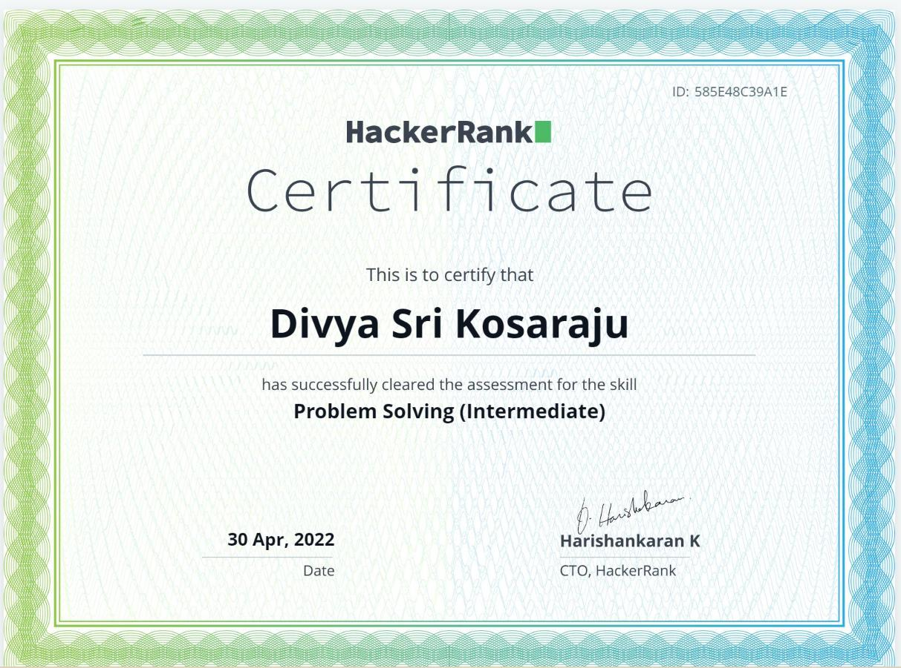
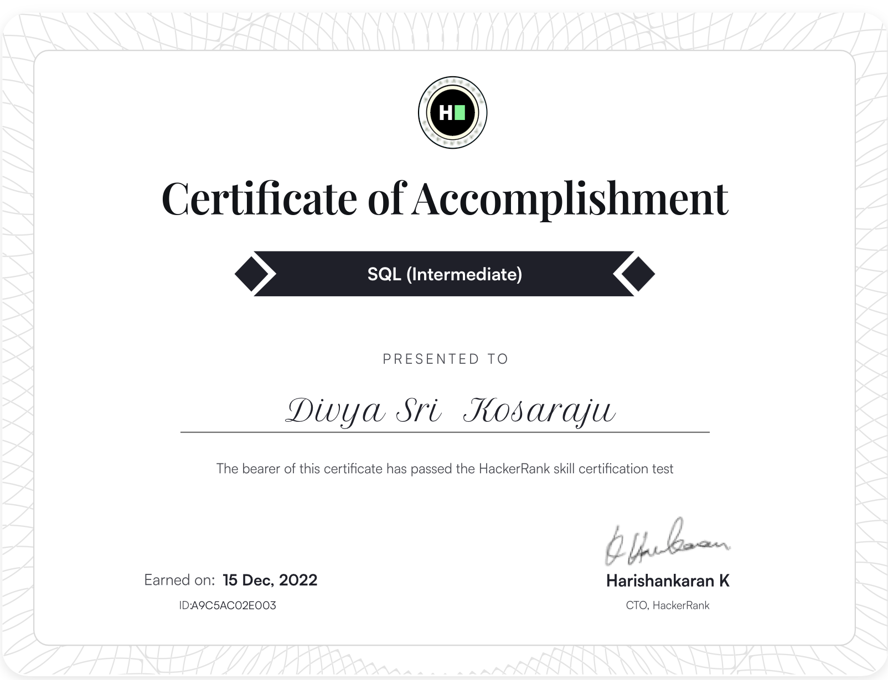
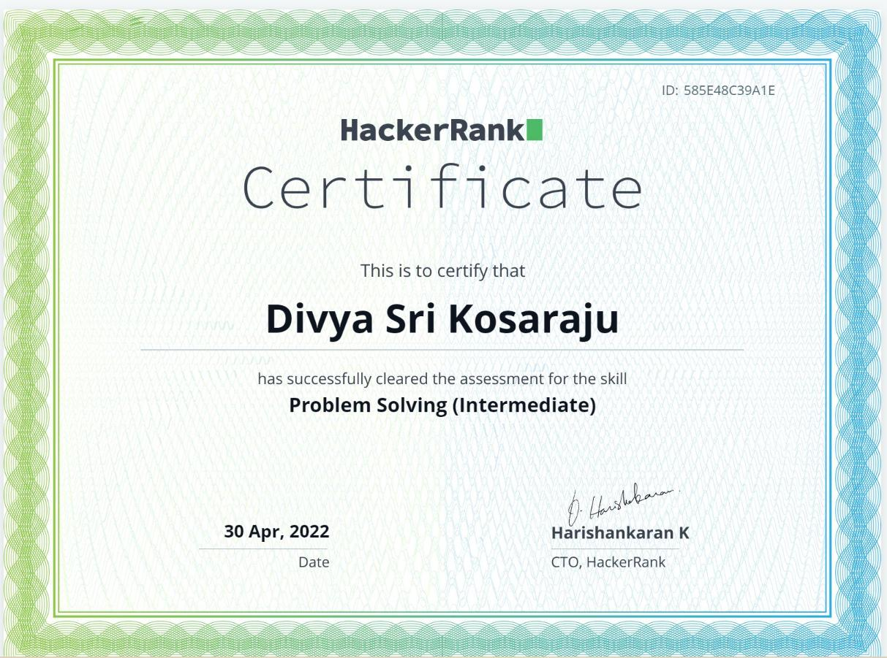
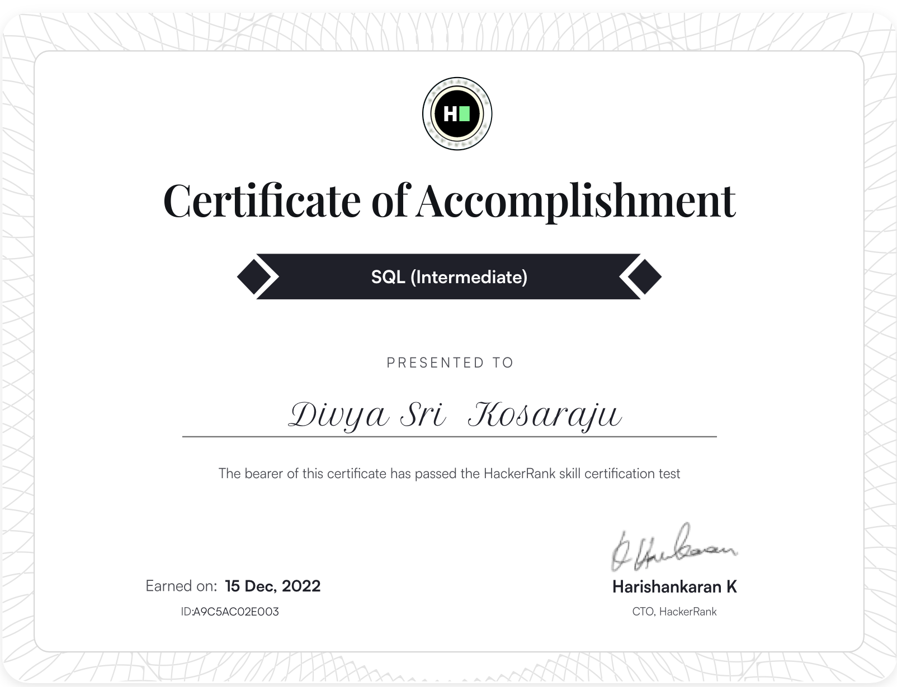

Certification Wall 📝
 




✖

Dynamic and results-driven Computer Science master’s student at the University of Central Florida with a strong foundation in AI, Machine Learning, and software development. Adept at designing and implementing intelligent solutions using Python, C++, Java, and full-stack web technologies. Spearheaded AI-driven research projects, including an ensemble learning model for COVID-19 detection and deep learning-based EMNIST character recognition, achieving significant accuracy improvements. Proven ability to optimize user experiences through frontend and backend development, demonstrated during a web development internship. Highly analytical, detail-oriented, and proactive in solving complex problems, collaborating effectively in team environments, and driving innovation through technology. Seeking opportunities to contribute cutting-edge solutions and elevate business impact.
Web Developer (Jun - Aug 2022)
Aug 2024 - Present
Computer Architecture, Design and Analysis of Algorithms, AIML, NLP
CGPA: 3.912 out of 4
Sep 2020 - May 2024
Computer Science and Engineering, Specialization in AIML
Minor in English
CGPA: 8.6 out of 10
Achieved 90% accuracy using ViT Model with advanced hyperparameter tuning. Collaborated on evaluating and comparing the performance of MLP, ViT, DenseNet, ResNet, and RNN with LSTM models on the EMNIST dataset.
Tools: Data Analysis & Management, Data Cleaning & Validation
Developed a machine learning solution to detect and classify crop pests using a curated dataset, leveraging advanced classification techniques.
Tools: TensorFlow, scikit-learn, Jupyter Notebook, Matplotlib, Pandas, OpenCV
Engineered a mini-ERP portal to centralize student data management and academic performance tracking, employing HTML, CSS, JavaScript, PHP, and MySQL.
Tools: VS Code, phpMyAdmin, MySQL
View ProjectC, C++, Python, Java, C#, JavaScript, HTML, CSS, PHP, AJAX, jQuery
Node.js, .NET Framework, Blazor, ASP.NET, Microsoft Visual Studio, EF Core
Artificial Intelligence, Machine Learning, Microsoft Copilot, Computer Vision, Research
Front-End: React, Tailwind, Material UI, jQuery, Blazor
Back-End: Node.js, ASP.NET, API Development, JSON Web Token (JWT)
SQL, MySQL, Database Integration, Database Management, Data Binding
Data Structures, Algorithms, Advanced Algorithms, Dynamic Programming
Azure Cloud Services, CI/CD, Website Deployment, DevOps, Performance Security
Security, Web Performance Optimization, Asynchronous Programming
Interpersonal Collaboration, Analytical Reasoning, Problem Solving, Self-Motivation, Adaptability, Articulate Communication, Quick Learning, Detail Orientation, Multitasking Efficiency
Authors: Divya Sri Kosaraju
Conference: IEEE Xplore, 2024
DOI: 10.1109/AISP61711.2024.10870737
Read Paper


Organization: Udaghosh Social Welfare Society
Duration: April 2022 - May 2022
Industry: Social Services
Organization: Tare Zameen Foundation
Duration: May 2022 - June 2022
Industry: Social Services